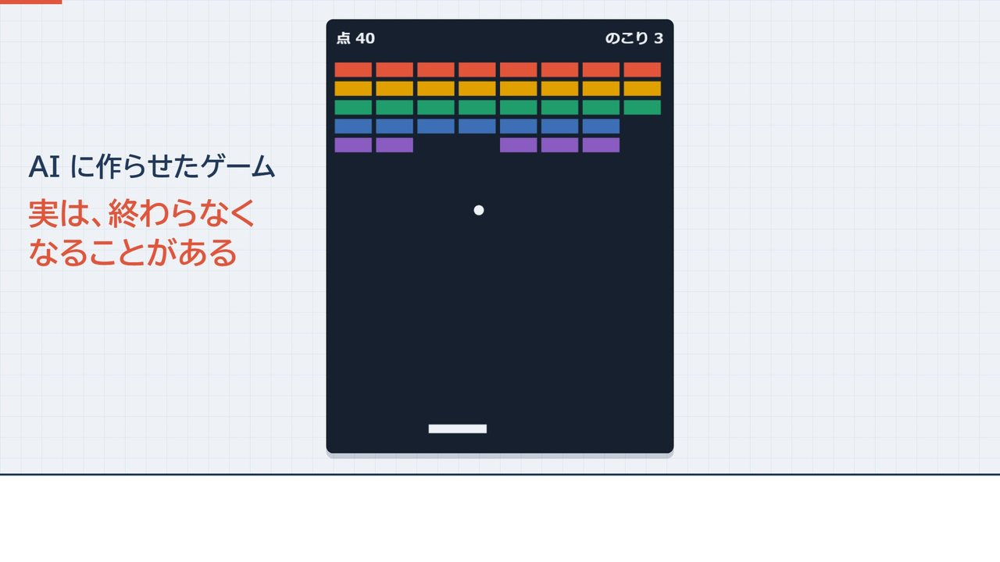
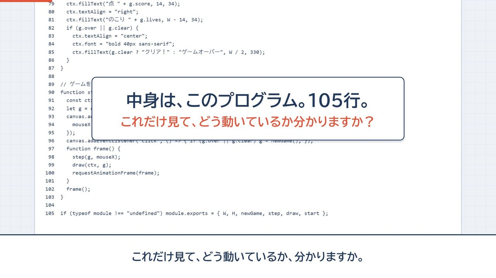
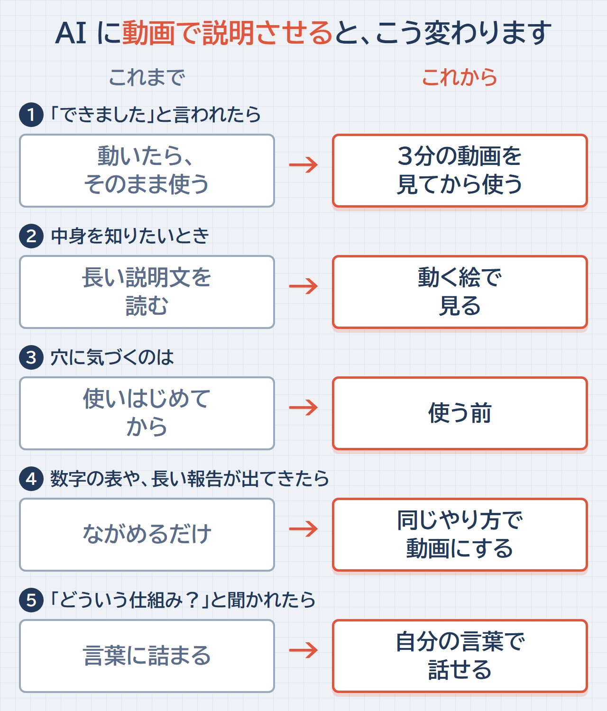
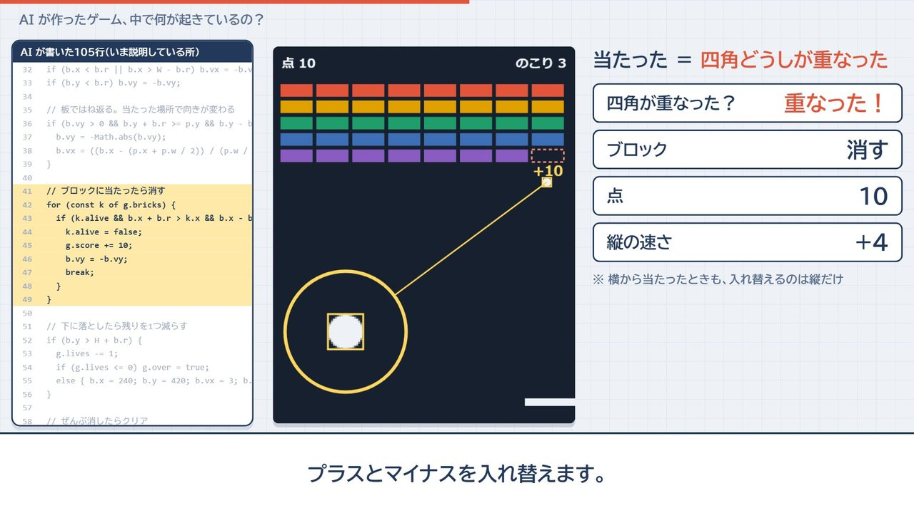
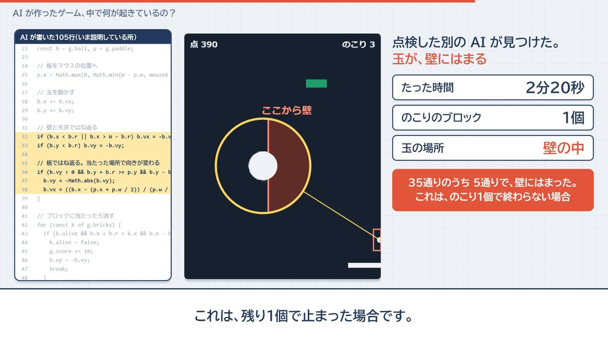
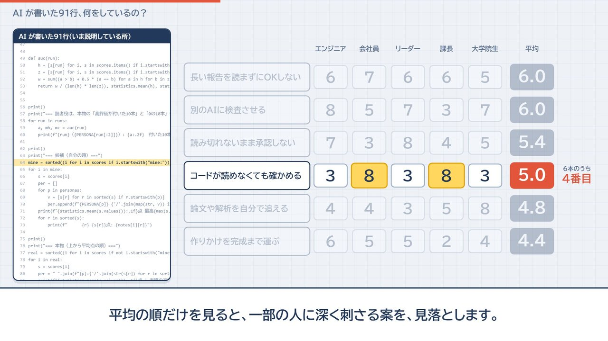
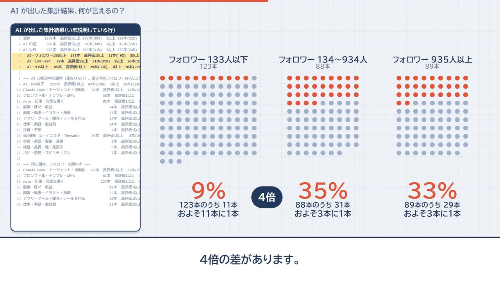
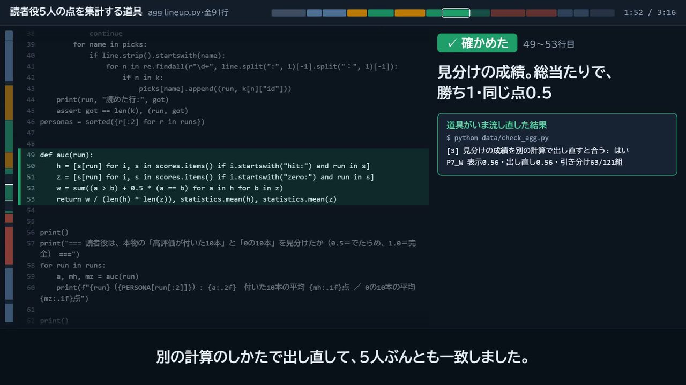
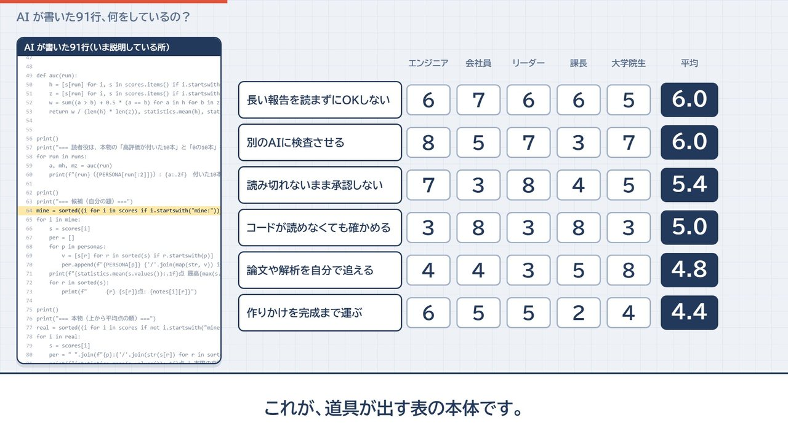

Views Engineer › 作品一覧 › 作り方
AIが作ったものの中身が、3分の動画で分かるようになる
この文章は、note で公開している記事の無料部分です。道具と依頼文、作り方（有料部分）は note にあります。
こんにちは、ViewsEngineer です。
メーカーで組み込みのエンジニアをしながら、Claude Code でゲームや動画を作っています。
早速ですが、この note は 「AI が作ったものの中身を、AI 自身に3分の動画で説明させて、分かるようにする」 ための note です。
AI に何かを作ってもらって、こんなふうに思ったことはありませんか？
- 「できました」と言われたけど、中で何をしているのかは正直よく分かっていない
- 「説明して」と頼んだら長い文章が返ってきて、読んでも頭に入ってこない
- 動いているから、まあいいか。そのまま使っている
- 人に「これ、どういう仕組み？」と聞かれると言葉に詰まる
- 人に渡したあとで、「ここ、おかしくない？」と言われたことがある
ひとつでも当てはまるなら、きっと役に立ちます。私も、読むのが追いつかなくなった一人です。
やるのは、動画にさせること。これだけです。それだけで、AI に作らせたものとの付き合い方が、がらっと変わりました。何がどう変わるのかを、これからお見せします。
少しだけ、私の話を
プログラムを読むのが仕事の私でも、AI に作らせる量が増えてくると、読むのが追いつかなくなりました。
Claude Code と一緒に、これまでゲームを14本、動画を約200本、記事を71本作って公開してきました。ぜんぶを1行ずつ読んでいたら、作る時間がなくなってしまいます。
かといって「動いているからOK」で受け取っていると、あとで困ります。「これ、どこで計算してるの？」と聞かれても、AI に聞き直さないと答えられません。直したい所があっても、どこを直せばいいのか分かりません。
AI と一緒に、まだ誰もやっていないことをやろうとすると、なおさらです。出てきたものを受け取るだけでは、先に進めません。
最初は AI に「説明して」と頼んでいました。長い文章が返ってきます。合っていそうです。でも頭に絵が浮かばないんです。
そこで、説明を文章ではなく動画で作らせてみました。
これが分かりやすかった。
しかも、読んでも遊んでも出てこなかった不具合まで出てきました。
まずは、見てください
AI に「ブロックくずしを作って」と頼んで、出てきたゲームです。ちゃんと遊べます。

中身はこういうプログラムです。100行ちょっとあります。

ここで、ちょっとだけクイズです。
- 玉は、どうやって動いている？
- 「ブロックに当たった」は、どうやって判定している？
- このゲームが終わらなくなるのは、どんなとき？
3つめは、読んだだけではまず気づけません。私も、ここは分からない所でした。
では、AI が作った解説動画を見てください。3分の動画です。
どうでしょう。3つ、答えられるようになっていませんか？
いま動画を見られない方のために、答えだけ書いておきます。
- 玉は、1秒に約60回、位置を少しずつずらして動かしている
- 玉を囲む四角と、ブロックの四角が重なったら「当たった」
- 終わらなくなるのは、板のまんなかで受け続けたとき。それと、玉が壁にはまったとき
動画にさせると、何が変わるのか
先にまとめると、こうです。

上から順に、お見せしますね。
① 「できました」のあとに、3分の動画が入ります。
さっき見てもらったのが、その動画です。受け取ったら、使う前にまず3分見る。やることは、これだけです。
② 「読む」が「見る」に変わります。
動画の中では、ゲームそのものが1コマずつ動きます。玉とブロックが重なった瞬間にブロックが消えて、点が入る。プログラムのどの行の話なのかも、左側で光って教えてくれます。

長い説明文を読んでいたときには浮かばなかった絵が、最初から目の前にあります。
③ 穴が、使う前に見つかります。
実はこのゲーム、ある動かし方をすると、玉を受け続けているかぎり、ブロックが残り1個のまま終わらなくなります。

この穴は、動画を作っている途中で出てきました。ふつうに遊んでいるだけでは、まず気づけません。人に渡したあとで見つかるのとは、大ちがいです。
④ ゲームでなくても、同じです。
AI に書かせた集計の道具も、AI が出してきた数字だらけの表も、同じやり方で動画になりました。


読みきれない量のものでも、です。
先日、数学者が AI と一緒に「リーマン予想を証明した」と発表しました。出てきたのは、1,737万行のプログラム。人が読みとおせる量ではありません。これも AI に、8分の解説動画にしてもらいました。何がどこまで確かめられているのかを、8分で追えます（発表が正しいかどうかは、動画を出した時点では、まだ確かめられている途中でした）。
⑤ 聞かれたら、自分の言葉で話せます。
動画の最後に、最初の3つの問いがもう一度出てきます。そこで答えられたら、それがそのまま人への説明になります。動画ごと見せてもかまいません。
「動画にして」と頼むだけでは、うまくいきませんでした
ここまで読んで、「それなら、自分で『動画にして』と頼めばいいのでは？」と思った方もいると思います。
私も、最初はそうしました。プログラムを上からゆっくり映して、AI に説明させる動画です。

4分見て、中身が頭に残りませんでした。読んで入ってこないものは、読み上げてもらっても入ってこないんですよね。
そこで作り方を変えました。プログラムを見せるのは最初の数秒だけ。すぐに「これだけ見て、分かりますか？」と聞いて、3つの問いを出す。あとは、その答えを絵で見せていく。
同じプログラムの動画が、こう変わりました。

この変え方を、依頼文と道具にまとめたのが、この note です。
この note で、できるようになること
- AI が「できました」と言ってきたら、3分の動画にさせて、中身を見てから使える
- 「これ、どういう仕組み？」と聞かれたら、3つの問いの答えで話せる
- プログラムだけでなく、数字の表や長い報告も、同じやり方で動画にできる
この note に入っているもの
① コピペで使える依頼文 7本
頼み方で迷わないように、私が使った依頼文をそのまま入れました。あなたが貼るのは、2本だけです。見本を作る1本と、自分のファイルで作る1本。残りは、その中から AI が読んで進めます。
② 動画を作る道具一式
Claude Code に渡すだけで動きます。プログラムを書く必要はありません。絵を動かす部分は、私も1行も書いていません。
③ そのまま動く見本
上のゲームの解説動画が、あなたの手元でそのまま作れます。準備が済めば、私のパソコンで、声なしなら約5分、声つきでも約16分でした。まず1本できあがるので、「本当に動くの？」で悩まずに済みます。
④ ゲーム以外の見本
割り勘の計算ページ、集計の道具、数字の表を動画にしたときの台本と絵も入れました。自分のものでやるときの手本になります。
無料で、ひとつだけ
動画を作らなくても、今日からできることがあります。
AI に何かを作ってもらったら、続けてこう頼んでみてください。
いまの出力について、中身を読まない人が答えられないと困る問いを、3つ作ってください。
1つめは「これは何を入れて、何を出すものか」。
2つめは、いちばんつまずきやすい所。
3つめは、これがうまく動かなくなる、または読みまちがえやすいのはどんなときか。
答えと、出力のどこを見れば分かるかも添えてください。3つめの答えがあやしかったら、使うのは少し待ってください。
こんな人に向いています
- Claude Code などの AI エージェントに、プログラムや資料を作らせている
- AI に作らせたものを、分かったうえで使いたい
- 人に「これはこういう仕組みです」と説明する立場にいる
- プログラムは読めなくても大丈夫です
逆に、向いていないのはこんな人です。
- AI エージェントを、まだ使ったことがない人（道具は AI エージェントに動かしてもらいます）
- ぜんぶ自分で読めていて、困っていない人
- 人に見せる、見栄えのいい紹介動画を作りたい人（これは自分が分かるための動画で、見た目は地味です）
正直に書いておきます
- 動画を見ても「正しい」とまでは言えません。分かるのは、中で何が起きているかと、どこが危ないかです
- 自分のファイルで作るときは、時間がかかります。80行のページで試したときは、およそ1時間半でした。そのあいだ、あなたの返事は2回だけです
- リーマン予想や入試問題の動画は別の道具で作ったもので、zip には入っていません
- 私が試したのは、Claude Code と Windows 11 です。Mac では試していません。見本の動画は、ChatGPT の Codex でも、同じ依頼文で作れました
- Python などの無料のソフトが要ります。入れる所は Claude Code に任せられます
- 声は、付けなくても作れます（字幕だけの動画になります）。付けるなら、無料の VOICEVOX か、無料の読み上げ（edge-tts）が使えます
あらためて、自己紹介
ViewsEngineer です。メーカーで組み込みのエンジニアをしています。
論文や入試問題の解説動画も、AI と一緒に作って公開しています。
自分で出した数学の結果（査読の前です）を解説した動画。
東京大学の入試の数学（2026年度、理系の全6問）を解説した動画。
つづきは、note で
ここから先は、note の有料部分（2,980円）にあります。
- 見本の動画を、あなたの手元で1本作る手順
- 自分のファイルで作る手順（貼る依頼文は1本、返事は2回）
- 動画を作る道具一式と、コピペで使える依頼文7本
仕組みをコードで読みたい方は、Qiita の記事に書きました（無料）。